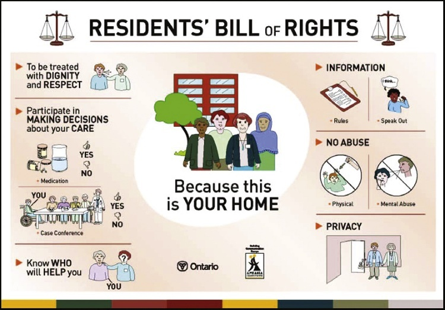

Support workers practise within a complex legal framework designed to protect the rights of both clients and healthcare providers. (iStockphoto/DenisTangneyJr)
A legal document in which a person states wishes about future health care, treatment, and personal care. Also known as an advance care directive, or sometimes a living will.
The person chosen by the now-deceased person to deal with their possessions, as stated in the will. Also known as guardian of property or executor or executrix.
Consent obtained under the legal condition whereby a person is first given complete, accurate, and relevant information so as to fully understand the action or procedure and its potential implications.
Violation of a person’s right not to have their name, photograph, private affairs, health information, or any personal information made public without consent.
A document that lets the reader know one’s preferences about care intended to sustain life and reflects one’s wishes at the time that it was created and signed. (This document has no legal status in Canada.)
参见医疗照护替代决策人（Substitute decision maker for health care）。
proxy
/ˈprɒksi/
医疗代理人p. 67
See substitute decision maker for health care.
参见医疗照护替代决策人（Substitute decision maker for health care）。
regulations
/ˌrɛɡjʊˈleɪʃənz/
实施条例 / 行政规章p. 62
Detailed rules that implement the requirements of a legislative act.
由政府行政主管部门依据上位成文法案授权、为贯彻落实法律条款而制定的详尽操作性技术细则与规章。
right
/raɪt/
权利 / 法定权益p. 61
Something to which a person is justly entitled.
个体基于自然正义或国家宪法法律赋予、完全正当且不可剥夺地依法应当享有的利益与资格。
slander
/ˈslɑːndər/
口头诽谤罪p. 72
The making of false verbal statements that hurt the reputation of a person.
通过口头语言、谣言口播等非持久性言语形式恶意传播虚假言论，贬损伤害他人人格声誉的侵权行为。
substitute decision maker for health care
/ˈsʌbstɪtjuːt dɪˈsɪʒən ˈmeɪkər fɔː hɛlθ keər/
医疗照护替代决策人（授权委托代理人）p. 67
A person authorized to make health care decisions on behalf of a living person who is unable to do so. Also called power of attorney for health care or proxy, depending on the province.
A legal document in which a person states wishes about future health care, treatment, and personal care. Also known as an advance care directive, or sometimes a living will.
The person chosen by the now-deceased person to deal with their possessions, as stated in the will. Also known as guardian of property or executor or executrix.
Consent obtained under the legal condition whereby a person is first given complete, accurate, and relevant information so as to fully understand the action or procedure and its potential implications.
Violation of a person’s right not to have their name, photograph, private affairs, health information, or any personal information made public without consent.
A document that lets the reader know one’s preferences about care intended to sustain life and reflects one’s wishes at the time that it was created and signed. (This document has no legal status in Canada.)
参见医疗照护替代决策人（Substitute decision maker for health care）。
proxyp. 67
/ˈprɒksi/
医疗代理人
See substitute decision maker for health care.
参见医疗照护替代决策人（Substitute decision maker for health care）。
regulationsp. 62
/ˌrɛɡjʊˈleɪʃənz/
实施条例 / 行政规章
Detailed rules that implement the requirements of a legislative act.
由政府行政主管部门依据上位成文法案授权、为贯彻落实法律条款而制定的详尽操作性技术细则与规章。
rightp. 61
/raɪt/
权利 / 法定权益
Something to which a person is justly entitled.
个体基于自然正义或国家宪法法律赋予、完全正当且不可剥夺地依法应当享有的利益与资格。
slanderp. 72
/ˈslɑːndər/
口头诽谤罪
The making of false verbal statements that hurt the reputation of a person.
通过口头语言、谣言口播等非持久性言语形式恶意传播虚假言论，贬损伤害他人人格声誉的侵权行为。
substitute decision maker for health carep. 67
/ˈsʌbstɪtjuːt dɪˈsɪʒən ˈmeɪkər fɔː hɛlθ keər/
医疗照护替代决策人（授权委托代理人）
A person authorized to make health care decisions on behalf of a living person who is unable to do so. Also called power of attorney for health care or proxy, depending on the province.
A legal document stating a person’s wishes concerning the distribution or disposal of their property.
立遗嘱人生前依法设立、详细说明其身故后名下财产分配与处置意愿的具有法律拘束力的文书。
The legal foundation of healthcare practice requires mastering precise statutory and constitutional terminology. The 35 terms outlined below reflect the authentic legal and clinical definitions established in Chapter 5 of the textbook.
You and your clients are entitled to a number of legal rights. The foundation of a good client–worker relationship is a basic understanding of the rights of the client, the worker’s rights, and the legal responsibilities of the worker. As a support worker, how you conduct yourself at work and how you relate to your clients are determined by:
• Your professional code of ethics (see Chapter 4)
你所遵从的行业职业伦理守则与操守准则（详见第 4 章）；
• Your employer’s policies
用人机构或设施制定并颁布的全部规章制度与标准操作规程；
• Federal and provincial or territorial laws
加拿大联邦最高法律以及所在省份或地区的全部现行法律法规。
Whereas ethics could be said to be rules of conduct that guide society when deciding what is right and what is wrong, and what is good and what is bad, legislation tells society what it can and cannot do. Legislation is a body of laws that govern the behaviour of a country’s residents.
In Canada, legislation helps to make sure that all health care clients receive safe and skillful care and enjoy the privacy that all people deserve. Enforced by the courts, legislation also protects clients’ rights and health care providers’ rights.
A right is something to which a person is justly entitled. Some rights, sometimes called moral rights, are based on a sense of fairness or ethics. For example, when you and a classmate arrange to study together, you have the right to expect that the classmate will show up and be prepared to work.
In another example, if you discussed a personal matter with a friend, you have the right to expect that your friend will not repeat this information to others. These rights are not based on written laws. They are based on moral principles: Commitments should be honoured, and secrets should be kept.
Rights that are formally recognized in law are legal rights based on rules and principles outlined in the law and enforced by society. For example, various laws give you the rights to vote, to receive medical care, to own property, and to receive fair treatment if accused of a crime. Laws reflect the values of the society that created them. Canadians enjoy rights and freedoms that enable a life of equality and dignity.
The Canadian Charter of Rights and Freedoms is federal legislation that applies to all Canadians regardless of where they live. As part of the Canadian Constitution, the Charter applies at the federal level, so all provincial and territorial laws must be consistent with its rules.
《加拿大权利与自由宪章》（The Canadian Charter of Rights and Freedoms）是一部适用于全体加拿大国民与居民的最高联邦成文法典，无论其身处国家哪一个行政区划。作为 1982 年《加拿大宪法》不可分割的基石部分，《宪章》在联邦最高层级统领全局，因此全加拿大所有省份及地区的立法与行政规章，必须无条件与其原则保持高度一致，绝不得有任何违宪抵触。
The Charter lists the basic rights and freedoms to which all Canadians are entitled. They include the following:
《宪章》庄严列明了全体人民平等享有的根本权利与自由，涵盖：
• Freedom of conscience and religion
良心自由与宗教信仰自由；
• Freedom of thought, belief, opinion, and expression
思想自由、信仰自由、观点自由与言论表达自由；
• Freedom of peaceful assembly and association (usually these freedoms are associated with the right to form a union or engage in a strike)
和平集会自由与结社自由（在劳工领域，这些自由直接关联到组建工会组织以及合法举行罢工维权的权利）；
• The right to vote
参与民主选举的公民投票选举权与被选举权；
• The right to enter, stay in, or leave Canada
自由出入境、定居或迁离加拿大的迁徙流动自由权；
• The right to life, liberty, and security
不可侵犯的人身生命权、人身自由权与人身安全保障权；
• The right to equality before and under the law, without discrimination based on race, ethnic origin, colour, religion, gender, age, or mental or physical disability
(The Charter is also discussed in Chapters 7 and 12 as this legislation pertains to the topics discussed there.)
Each Canadian province and territory also has a human rights code. These codes reaffirm the principle that all people are entitled to equal rights and opportunities—such as the same type and quality of support services—without discrimination because of race, ethnicity, religion, gender, age, or disability.
医疗卫生服务受助人群的核心法定人权（BASIC RIGHTS OF PEOPLE RECEIVING HEALTH SERVICES）
The Human Rights Act is provincial and territorial legislation based on the Canadian Human Rights Act and applies to its specific province or territory. Each Human Rights Act is intended to (1) prevent discrimination and (2) promote and advance human rights in that jurisdiction. Some of the issues addressed by the Human Rights Act of each province or territory include the following:
各省及地区的《人权法》（Human Rights Act）是依据联邦《加拿大人权法》精神在本行政区设立的地方法规。每一部人权法的核心立法宗旨皆在于：(1) 坚决阻断并消除一切形式的非法歧视；(2) 在其管辖辖区内积极倡导并大力推进人权事业的发展。各省人权法明确规制并严禁歧视的典型核心议题包括：
• Indigenous rights
原住民与第一民族特有法定人权与文化权益；
• Age discrimination
基于生理年龄（尤其是针对衰弱老年人与青少年）的歧视；
• Disability
针对肢体残疾、感官缺陷或认知发育障碍人群的歧视；
• Employment
劳工招募聘用、薪酬待遇与职业发展维度的平等就业权；
• Gender identity
性别认同与性别表达的合法平权保障；
• Hiring practices
用人单位人事招募招聘全流程的公正非歧视操作规范。
p. 62
• Housing
公平租房买房与支持性住房平权保障；
• Pregnancy and breastfeeding
保护女性妊娠怀孕与公共场所母乳喂养不受任何歧视骚扰；
• Racism
严厉打击并严惩任何种族主义与仇恨行径；
• Religious rights
公民宗教信仰与从事合法宗教仪轨活动的权利；
• Sexual harassment
严惩工作场所、医疗环境及公共生活中的任何性骚扰；
• Sexual orientation
坚决捍卫不同性取向群体的完全平等法定权利。
As well, all provinces and territories have legislation that addresses the rights and freedoms of people using health care services. Your clients, however, may be unable to exercise their rights because of illness or injury; physical, cognitive, or mental challenges; or old age, if the client is frail, confused, or isolated.
The laws governing health care have different titles across the country and may differ in details. You should be aware of the acts that govern your province or territory, which can easily be found on the Internet. Provincial and territorial governments constantly revise health care legislation and introduce new laws to protect the rights of people receiving care in facilities and in the community.
Regulations are detailed rules that implement the requirements of the act. Most health care acts consist of general requirements for maintaining health, safety, and well-being.
For example, British Columbia’s Community Care and Assisted Living Act sets out general requirements for the licensing, administration, operation, and inspection of long-term care facilities and also sets out broad standards of care. The Residential Care Regulation, which accompanies the Act, sets out detailed rules for meeting those broad standards of care. BOX 5.1 outlines some of the rules covered in British Columbia’s Residential Care Regulation, as well as regulations in other provinces such as Manitoba, Nova Scotia, Saskatchewan, and Ontario.
例如，不列颠哥伦比亚省（BC 省）所颁布的《社区照护与辅助生活法案》（Community Care and Assisted Living Act），在宏观法理层面上明文规定了长期照护养老机构的行政审批发牌、日常行政管理、运转标准以及政府卫生监督官日常稽查执法的根本要求，并设定了宏观的照护品质基准。而作为该法案法定配套实施规章的《常住照护实施条例》（Residential Care Regulation），则逐条列出了满足上述宏观照护标准所需的极度详尽的技术规程。专栏 5.1 详尽提炼了 BC 省《常住照护实施条例》以及马尼托巴、新斯科舍、萨斯喀彻温与安大略等省份养老法规中所涵盖的典型监管红线。
Some provincial and territorial governments do not have regulations that lay out detailed rules. Instead, they issue standards that expand on their legislation.
部分省及地区政府并未采取制定细则条例的立法技术，而是选择通过官方颁布严格的“行业技术标准（Standards）”来对上位立法进行具象延伸。例如，阿尔伯塔省的长期照护法规便是由名为《延续照护卫生服务标准》（Continuing Care Health Service Standards）的权威文件进行细化规范。
For example, Alberta’s long-term care legislation is accompanied by standards called Continuing Care Health Service Standards. Regardless of whether detailed rules are contained in regulations or standards, all live-in facilities in a province or territory must abide by these rules. Not to do so could result in removal of their licences.
There is no single list of rights afforded to all Canadians receiving care in facilities and in the community. However, some provinces, such as British Columbia, Manitoba and Ontario, have created a bill of rights for clients, which is essentially a summary of the lengthy rules contained in regulations and standards.
在全加拿大国家层面，目前尚未出台一部面向在所有机构与社区接受照料人群的一揽子唯一个人权利法案。然而，包括 BC 省、马尼托巴省以及安大略省在内的多个省份，皆专门出台了正式的《案主 / 住客权利法案》（Bill of Rights）。
For example, consider British Columbia’s Residents’ Bill of Rights for long-term care clients (BOX 5.2). Some facilities and agencies write their own bills of rights based on provincial or territorial laws.
Clients must receive a written list of their rights. As a support worker, you must know the provincial or territorial laws and your employer policy regarding client rights.
• The right to privacy and confidentiality, verbally, in writing, or electronically
享有在口头言语、书面文字以及数字化电子信息全维度获得绝对个人隐私与秘密保障的权利；
• The right to give or withhold informed consent
享有在充分知情前提下自主作出同意或许可、或坚决行使拒绝知情同意的神圣权利；
• The right to autonomy
享有对自身生命起居、个人事务及治疗抉择拥有最高自由支配意志的自主自决权。
The Aphasia Institute of Ontario introduced the first-ever pictographic version of the Ontario Residents’ Bill of Rights in 2005 (FIGURE 5.1). In live-in facilities, it must be posted near the text version of the Residents’ Bill of Rights. This pictogram offers effective ways to communicate with clients who retain thinking and social skills but have difficulty expressing themselves when speaking, understanding the speech of others, and reading and writing.
安大略省失语症研究所（Aphasia Institute of Ontario）于 2005 年在全加拿大首创推出了具有里程碑意义的象形图解版《安大略省住客权利法案》（见图 5.1）。依据法规，在各常住型养老机构内，该图解版本必须紧挨着纯文本法律版权利法案一同张贴在醒目公告栏中。这套色彩鲜明、通俗易懂的象形图示系统，为那些认知思考与社交能力依然健全、但由于脑中风中风或神经病变导致言语表达障碍、听理解障碍、或彻底丧失读写阅读能力的失语症及认知障碍长者，提供了一条无障碍知晓并捍卫自身人权的生命沟通桥梁。

FIGURE 5.1 · 原书全真图例
Pictographic version of the Residents’ Bill of Rights. (Source: Aphasia Institute [2005]. Residents’ bill of rights: Pictograph. Toronto.)
享有获得体面尊严与崇高敬意对待的神圣权利（The Right to Dignity and Respect）
The right to dignity is both an ethical principle and a legal obligation throughout Canada. It is also a guiding principle of caregiving, as emphasized throughout this textbook under the acronym DIPPS (Dignity, Independence, Individualized care, Preferences, Privacy, and Safety). Most health care legislation aims to protect and promote the client’s dignity. For example, British Columbia’s Community Care and Assisted Living Act states that facilities must be operated “in a manner that will maintain the spirit, dignity, and individuality of the client being cared for.” Ontario’s Long-Term Care Act states that the client has the right to be dealt with “in a courteous and respectful manner . . .
that respects the client’s dignity” and in a manner that “recognizes the client’s individuality and that is sensitive to and responds to the client’s needs and preferences, including preferences based on ethnic, spiritual, linguistic, familial and cultural factors.”
Respecting the client’s dignity is a basic and important part of support work. For most people, dignity and independence go together. To respect your clients’ dignity, encourage them to be independent, allowing them to do as much for themselves as possible (FIGURE 5.2). For example, if a frail older man can put on his shoes, let him do so. It may save you time to put his shoes on for him. However, letting him do it himself helps him maintain some independence.
Be careful not to make any assumptions about a client’s abilities, interests, and limitations. By making assumptions, you may discourage them from doing tasks and activities that they can do. Observe what your client is capable of doing, and check the care plan. A client who is dependent in one area is not necessarily dependent in all areas. For example, Mrs. Mukherjee needs help getting out of a chair. However,
Mrs. MacDonald can easily walk by herself, but because of Alzheimer’s disease, she may wander off and needs to be supported in a secure environment. Respecting people’s dignity means relating to them the way you would want to be related to if you were in their position.
Speak respectfully to them, keeping in mind their hearing or sight limitations if they have any (FIGURE 5.3). In support work, how you relate to a client is just as important as the care you provide. Treating clients with dignity provides them with emotional support and greatly contributes to their quality of life. BOX 5.3 lists ways of respecting the client’s dignity.
Listen to the client by facing her at eye level, maintaining appropriate eye contact, and leaning toward her. (Source: Sorrentino, S. A., & Remmert, L. [2012]. Mosby’s textbook for nursing assistants [8th ed., p. 98]. Mosby.)
享有个人隐私权与信息绝对保密权（The Right to Privacy and Confidentiality）
People using health care services have the right to personal privacy. They have the right to receive care in private and in a way that does not expose their bodies unnecessarily. Only staff members involved in the client’s care should see, handle, or examine the client’s body. Information about the client’s care, treatment, and condition is confidential (see Chapter 1). All provinces and territories have legislation that protects the privacy and confidentiality of clients’ health information.
This legislation is usually called a privacy act. Privacy acts provide guidelines to facilities and agencies on how to collect, use, and disclose personal health information. Most agencies require that all staff (and usually volunteers and students) sign an oath of confidentiality, a pledge that promises that the signer will respect and guard personal and private information about a client, family, or agency (see Chapter 9). When in doubt about whether or not to discuss something that you saw in regard to the client, you should always follow your employer’s policies. Some home care agencies use camera cell phones, electronic tablets, or smartphones to document certain information about a client, such as to record the healing progression of a wound, or the presence of bruising on the client.
此类法律在司法实践中统称为《隐私法》（Privacy Act）。《隐私法》为各医疗设施、养老院及社区照护机构制定了收集、使用和披露个人健康信息的法定准则与边界红线。绝大多数雇主机构均明确勒令所有正式雇员（通常亦涵盖义工及实习学员）在入职伊始签署具有法律效力的《保密誓词》（Oath of Confidentiality）——这是一份庄严的法律誓约，签署人承诺对所知晓的关于案主、家庭或雇主机构的一切私密隐私信息予以终身严密保守（参见第 9 章）。当你对所观察到的案主私密情况是否可以对外讨论产生丝毫疑惑时，唯一正确的选择就是毫不妥协地执行雇主机构的保密条例。
In any case, the health care worker must follow the agency’s policies regarding the client’s right to privacy, how to send a client’s information, and how to dispose of this information after the information has been sent, to prevent unauthorized release of information. Most agencies supply their own camera smartphones for this purpose. In this case, the phone is blocked from any social media sites, and it must be turned in after the health care worker’s shift is over. Providing for privacy and confidentiality shows respect for the client and protects the client’s dignity. BOX 5.4 lists measures that show respect for privacy and confidentiality.
Almost everyone now uses some method of electronic communication—we routinely use our home computers, tablets, or smartphones to communicate with and send pictures to others. There are websites dedicated to allowing users to look at pictures or video clips of other people doing things, almost in real time. For instance, when a celebrity was photographed in compromising circumstances with a
woman other than his wife, the image was shared worldwide and resulted in the celebrity’s devastated wife filing for divorce immediately. In today’s age of electronic communication, people tend to forget that everyone has the right to privacy.
In health care, electronic privacy could be defined as a person’s right not to have their image, words, or character description or comments about their reputation made public by electronic means. (See Chapter 9 for more discussion on electronic communication.) It is wrong, both ethically and now legally in most provinces, to post pictures, names, or discussions about your clients, no matter how “nice” you think you are being to that client, on any social media site (see the Supporting Mrs. Jones: Social Media Versus a Client’s Right to Confidentiality box for an example of how one client’s privacy rights were violated).
在医疗卫生支持领域，电子隐私（Electronic Privacy）被严格界定为：个人依法享有其肖像、原话言论、性格特质描述或对其个人声誉的评价决不被他人通过任何电子数字化手段公之于众的权利（有关电子通信合规的更多专题探讨参见第 9 章）。无论你的主观初衷多么“善意温存”，将案主的身影照片、真实姓名或任何照护轶事发布到任何社交媒体上，在伦理上皆属严重失德，在当今绝大多数省份的法律下更属明确的违法侵权行为（参见后文“支持琼斯夫人：社交网络传播 vs 案主隐私保密权”真实案例专栏，剖析案主隐私权如何遭受毁灭性践踏）。
The Right to Give or Withhold Informed Consent
给予或拒绝知情同意的法定权利（The Right to Informed Consent）
All people have the right to decide for themselves whether or not they agree to medical treatment, health care, or personal care services. Such agreement is called consent. All provinces and territories have legislation that describes when and how consent is to be obtained. For consent to be valid, it must be informed consent, which is based on having received accurate and complete information. This information is provided to the client by the facility, agency, or physician.
Consent is not valid if the client has not received this information. Clients have the right to receive information about: the reasons for the treatment, procedure, or care; what will be done; how it will be done; who will do it; the expected outcomes; potential risks and side effects; other treatment options; and the likely consequences of not having the treatment, procedure, or care. The client must be mentally competent to give consent. A person who is confused, mentally incapacitated, or under the influence of medications or alcohol cannot give informed consent. Consent can be verbal, written, or implied.
Verbal consent is spoken aloud. For example, if you ask Mrs. Singh, “May I help you into your chair?” and she says, “Yes, please,” she has given verbal consent. Written consent is given by signing a document. It is usually required for major treatments, surgeries, and
The support worker is never responsible for obtaining written consent or giving medical information. As a support worker, you may or may not be allowed to witness clients’ signatures on consent forms. Know your employer’s policy regarding consent forms.
An advance directive (also known as an advance care directive) is a legal document that allows clients to convey their decisions about their own end-of-life care, whether they live at home or in a live-in facility. This document is signed ahead of time, often when a client is admitted to an extended care facility, and is usually completed as part of advance care planning in consultation with the client, next of kin (usually the substitute decision maker for health care—called the power of attorney or proxy in some provinces), and the agency’s director of care or administrator.
预立医疗指示（Advance Directive，亦称预先照护指示 Advance Care Directive）是一份由当事人在神志清醒状态下亲笔订立的法律文本。它赋予案主充分自主决定未来当其面临临终末期生命阶段时，无论身处居家住所还是长期照护机构，应当接受或拒绝何种维持生命治疗的意志表达。
The substitute decision maker for personal care may—but does not have to—set out the person’s wishes regarding care and treatment. Advance directive documents (and regulations about them) vary from province to province throughout the country.
该指示通常在入住延续性护理机构时提前签署，并作为案主与直系亲属（通常为医疗替代决策人 —— 在部分省份称为授权委托人或健康代理人 Proxy）、机构照护总监或行政主管共同展开的“预先照护规划”（Advance Care Planning）的核心成果。人身照护替代决策人可以 —— 但并非强制法定义务 —— 详细载明当事人对具体诊疗方案的个性化意愿。
Advance directives provide a way for clients to communicate their wishes to their families, friends, and health care providers and are intended to avoid confusion later on, when the clients are perhaps less cognitively aware of their surroundings. In an advance directive, a person can state whether they wish to accept or refuse medical care under certain circumstances. It can address such issues as the following:
• The use of dialysis and breathing machines
• Resuscitation if breathing or heartbeat stops
• Tube feeding
• Organ or tissue donation
A living will is a document that lets the reader know a person’s preferences about care intended to sustain life and reflects a person’s wishes at the time that it is created and signed. Some people who are still living in their own home may want their family and friends to know whether or not they want care that is intended to sustain their life, and some may write these thoughts down in their living will.
Like an advance directive, a living will is also not legally enforceable (see the Supporting Mme. LeBrun: Is a Living Will Enforceable? box) but is used to encourage family members to make decisions that respect the client’s wishes.
Substitute Decision Makers for Personal Care or for Property
人身照料与财产事务之法定替代决策人（Substitute Decision Makers）
Clients under the legal age (usually 18 years) and clients who are unable to make informed decisions for themselves or their property need another person to provide consent on their behalf. The generally accepted legal term for this person in Canada is substitute decision maker.
In most provinces, people refer to the substitute decision maker as having power of attorney. (See Chapter 47 for more information about powers of attorney.)
在全国绝大多数省份，公众习惯将持有此类法定代理权的人称为授权委托书持有人（Power of Attorney，简称 POA；有关授权委托书的精深法理参见第 47 章）。
Substitute Decision Maker for Personal Care
人身生活照护与医疗替代决策人（Substitute Decision Maker for Personal Care）
People with certain mental illnesses, confusion, dementia, or intellectual disabilities may not be able to give informed consent. In some situations, for example, an unconscious client cannot give consent for a procedure. Such situations require a substitute decision maker for health care.
Depending on the province, the title proxy or power of attorney for personal care may be used instead. The substitute decision maker for health care makes health care decisions, such as giving or with-holding consent for treatments, if the client is unable to do so. Usually, the substitute decision maker is a spouse, daughter, son, or legal representative.
视各省法律体例不同，该角色亦被称为医疗健康代理人（Proxy）或人身照护授权委托人（Power of Attorney for Personal Care）。
当案主彻底丧失自决能力时，医疗替代决策人全权代表案主做出至关重要的医疗决策，包括合法给予或严正拒绝某项医疗方案。在现实家庭关系中，替代决策人通常由法定配偶、成年儿女或法院指定的法定监护人担任。
As with consent given by the client, consent given by a substitute decision maker must be informed consent. If your client has a substitute decision maker, this person will consult with the health care team to make decisions on the client’s behalf. All provinces and territories have legislation that addresses substitute decision making.
名下财产与经济事务法定替代决策人（Substitute Decision Maker for Property）
As in situations that require a substitute decision maker for health care, in some cases, the client may be unable to make decisions regarding their belongings. In this case, the client’s interests would be represented
by a substitute decision maker for property. This person may or may not have been chosen by the client when they were able to make such decisions. A substitute decision maker for property cannot make personal care decisions unless a separate document is signed identifying that person also as the substitute decision maker for personal care.
财产法定替代决策人（Substitute Decision Maker for Property）全权代理。这位代理人可能是案主在过去心智健全、具备完全民事行为能力时亲笔指定的；亦可能是在案主丧失能力后由法律程序指派的。
If a client does not have a substitute decision maker for property, the provincial or territorial court may appoint someone to act as one. The appointed person would be legally bound to act in the client’s best interests. Although terms may vary among jurisdictions, a generally accepted term in Canada for the person who acts on behalf of a client in regard to property is an estate trustee (or guardian of property).
需要特别强调的是：财产法定替代决策人绝对无权擅自干预或做出案主的人身医疗照护决策，除非案主在神志清醒时另行正式签署了独立的授权文书，明确赋予同一人兼任人身照料法定替代决策人的双重资格！
若一位失能案主生前从未依法指定财产替代决策人，所在省份或地区的高等法院将依法行使司法管辖权，指定一名法定代理人。由法庭指定的人在法理上承担着必须完全以案主的最大福祉（Best Interests）为唯一行为准则的信托法定法定义务。尽管各省司法术语略有出入，但加拿大全国普遍通用的法律专有名词将代表案主打理监管名下财产的代理人统称为遗产受托人（Estate Trustee，或称财产法定监护人 Guardian of Property）。
Most adults have a will—a legal document that states one’s wishes about where (or to whom) their property should go. It should be written while the client is cognitively intact, witnessed by a lawyer, and kept in the lawyer’s office. Some people also keep copies of their wills in secure, fireproof places, such as a safe or a safety deposit box.
Upon the client’s death, the substitute decision makers for health care or property cannot automatically decide what will happen to the deceased person’s body. Decisions regarding releasing the client’s body for funeral preparations or for burial must be made by the estate trustee who is named in the deceased person’s will, by the deceased person’s spouse or adult children, or by an administrator, the person appointed by the court if there are any conflicts. (If the client dies without leaving a will, the provincial or territorial court will appoint an administrator to divide up the client’s property.) In most provinces and territories, the estate trustee is also known as an executor if the person is a man and an executrix if the person is a woman.
Autonomy, or self-determination, means having the freedom and choice to make decisions that affect one’s life (see Chapter 4) or end-of-life care (see Chapter 47). People using health care services have a right to autonomy when making decisions about their care and lifestyle.
Clients have the right to be involved in issues concerning their admission, discharge, or transfer to or from a facility (see the Focus on Long-Term Care: Autonomy box). They also have the right to participate fully in assessing and planning their own care and treatment, whether receiving care in a live-in facility or at home.
Client rights are based on laws. Like all health care team members, you, as the support worker, must act in a legally appropriate manner. If you break the law
or violate someone’s rights, you are legally responsible (liable) for your actions and could be fined, sued, or even imprisoned. You must obey both criminal laws and civil laws. Criminal laws are concerned with offences against the public and against society in general.
A violation of criminal law is called a crime—for example, theft, murder, rape, or abuse—and a person found guilty of a crime is fined or sent to prison. Civil laws deal with relationships between people. For example, laws relating to business disputes, divorce, or adoption are civil laws. A tort is a wrongful act committed by an individual against another person or the person’s property.
A person who commits such an act can be sued by the injured person. Torts may be intentional or unintentional. An example of an unintentional tort is negligence. Examples of intentional torts are assault, battery, false imprisonment, invasion of privacy, and defamation of character.
实施民事侵权的不法加害人将依法被受害受损方直接送上法庭提起民事诉讼索赔。在法律分类上，民事侵权被严格划分为过失侵权（Unintentional Tort）与故意侵权（Intentional Tort）两大门类。过失侵权最典型的临床司法表现为疏忽过失（Negligence）；而故意侵权则涵盖人身恐吓威胁（Assault）、蓄意殴打侵权（Battery）、非法拘禁剥夺人身自由（False Imprisonment）、非法侵犯他人隐私权（Invasion of Privacy）以及蓄意恶意毁坏名誉罪（Defamation of Character）。
Negligence
临床疏忽过失与民事侵权责任判定（Negligence）
Clients expect their health care providers to do their jobs competently and carefully. Negligence occurs when a person fails to act in a careful or competent manner and thereby harms the client or damages property. Negligence is an unintentional wrong because the person at fault did not intend to cause harm. They either failed to do what a reasonable and careful person would have done or did what a reasonable and careful person would not have done.
The negligent individual may have to pay damages (a sum of money) to the injured person. The causes of negligence are given below:
• Not performing a task or procedure correctly. As a support worker, always perform your tasks and procedures exactly as you have been taught. Not following procedures can result in harming the client.
For example, you are taught to keep a urinary drainage bag below the client’s bladder level. If you keep it above the bladder level, urine will not drain, and the client could develop a urinary tract infection. Such negligence could harm the client, and charges could result. • Performing a task or procedure that you are not qualified to do. You are legally allowed to do only those tasks and procedures that you are qualified
to do. Do not do more than is allowed within your job description, your employer’s policies, and legislation within your province or territory. You may be asked to do something beyond your scope of practice—for example, giving medications. Even if you are assured that you are not liable, you should remember that you are responsible for your own actions. In other words, you may, in fact, be liable. In such a situation, remember that refusing to follow through on a request that is beyond your scope of practice is your right and your duty.
• Making a mistake because of carelessness that causes harm to a client. Everyone makes mistakes sometimes, but a mistake that results from carelessness and causes harm is a negligent act. For example, if you do not mop up a spill, you could cause a client to slip and fall, and your carelessness could be considered negligence. BOX 5.5 contains examples of negligent acts committed by support workers. A client could be harmed even when you do your job competently and carefully. It is important to record every procedure accurately, following your employer’s policy.
What you record may later on protect you from charges of negligence. For example, a client confined to bed develops serious pressure sores. The family thinks she was left lying in the same position too long. Your charting shows that you repositioned her every hour, as stated in her care plan. This proves that you gave the required care and did not cause the pressure sores. If you had not recorded that you repositioned her every hour, it could have been presumed that you did not do it (see Chapter 26 for further discussion of recording).
Assault and battery may result in both civil and criminal charges. Assault is identified in Canada’s Criminal Code and can be defined as intentionally attempting or threatening to touch a client’s body without the client’s consent, causing the client to fear bodily harm. Threatening to “tie down” an uncooperative client is an example of assault. Battery (which is part of tort law) is the actual intentional touching of a client’s body without the client’s consent.
人身威胁恐吓（Assault）与非法殴打侵权（Battery）在司法管辖中可同时引爆严重的民事侵权索赔与公诉刑事指控！人身威胁恐吓在《加拿大联邦刑法典》（Criminal Code of Canada）中被正式定性为刑事犯罪，其法律定义为：未经受害人明确同意，故意企图或口头/肢体威胁触碰他人身体，从而导致当事人产生遭受身体实质创伤的合理恐惧。例如，对一位烦躁不配合照料的长者厉声恐吓“你再乱动我就把你五花大绑捆在床上”，这在法律上即已构成不折不扣的人身威胁恐吓罪！而非法殴打侵权（属于民事侵权法核心领域）则是指在未经案主同意的情况下，蓄意物理接触案主的身躯。
Battery can be committed without an intent to injure; just touching a client without their permission is battery. Force-feeding a client is an example of battery. Another is giving a treatment (such as a blood transfusion) to a person who has refused the treatment, even if the health care provider thinks the treatment will “help” the person. As a support worker you are not required to obtain written consent before you perform a task or procedure.
However, you must always be aware of the client’s wishes. Also, a client who has signed a consent form has the right to withdraw their consent at any time. Always explain the procedure and what you are going to do, and make sure the client agrees to it. Consent may be verbal (“yes” or “okay”) or physical (a gesture such as a nod, turning over for a back rub, or holding out an arm for a blood pressure measurement). If the client objects to or declines your
services, respect their wishes and stop the procedure or task, and immediately inform your supervisor since the client’s decision may affect their well-being. In some provinces and territories, registered health care providers may delegate to support workers duties that are beyond the scope of their practice (see Chapter 10, Chapter 40, and Chapter 45).
If a support worker performs duties that are beyond the scope of their practice, and these duties were never delegated and taught by a registered staff member, the support worker is actually assaulting the client. It is the responsibility of the support worker to understand the responsibilities within their role and to safely act within these boundaries.
False imprisonment is the unlawful restraint of or restrictions on a person’s freedom of movement. For example, preventing a client from leaving a facility is false imprisonment.
So is the unauthorized use of physical restraints (e.g., vest, wrist, or belt restraints) or chemical restraints (e.g., medications that calm a client or make them drowsy) to control a client’s behaviour or movement. Restraints can be used only when all other measures have failed, and then only with a physician’s order and the informed consent of the client or the substitute decision maker (see Chapter 14 for a full discussion on restraints).
Defamation is injuring the name and reputation of a person by making false statements to a third person. Slander is making false statements orally, whereas libel is making false statements in print, writing, or pictures.
Defamation can occur if you make false statements about a client, a coworker, or your employer. You can be sued for defamation if you make statements that hold the person up to ridicule, contempt, or hatred, or that harm the person’s character or reputation. Defamation could include doing any of the following:
• Implying or suggesting that a client has a sexually transmitted infection
• Saying that a client is insane or mentally ill
• Implying or suggesting that a client is corrupt or dishonest
Federal, provincial, and territorial legislation ensures that Canadian workers receive fair wages and work in a fair and safe environment. Laws have been enacted to protect workers’ rights and clarify their requirements and duties.
that addresses human rights, occupational health and safety, employment, labour relations, workers’ compensation, long-term care services, and community services.
Human rights codes protect workers’ basic human rights. This legislation states that employers must treat all workers equally and not discriminate on the basis of a worker’s ethnic background, colour, gender, sexual orientation, religion, age, or disability.
各省《人权法典》（Human Rights Codes）铸就了劳工基本宪法级人权的坚实盾牌。该法严正宣告：雇主必须一视同仁平等相待所有雇员，绝不得基于劳动者的种族血统、肤色、性别认同、性取向、宗教信仰、生理年龄或身心残障实施任何形式的就业歧视！
Employers and employment agencies also cannot discriminate at the request of a client. Human rights legislation declares that workers have the right to be free from harassment (also called workplace bullying) in the workplace by the employer, the client, or a fellow worker (see Chapter 12). Harassment means troubling, tormenting, offending, or worrying a person through one’s behaviour or comments.
All provinces and territories have occupational health and safety (OH&S) legislation. This legislation outlines the rights and responsibilities of workers, employers, and supervisors in creating and maintaining a safe work environment. OH&S legislation, however, is not enforceable in a home care environment and does not protect support workers in home care.
加拿大所有省份及地区均颁布了完备的《职业健康与安全法》（Occupational Health and Safety Act，简称 OH&S）。该法系统划定了雇员、雇主以及一线监督管理人员在创建并维护本质安全工作环境中的法定权利与安全责任。然而必须如实指出的是：现行 OH&S 职安健法案通常无法直接覆盖并强制执行于私人居家照护环境，因而在私人家庭上门服务的一线支持工作者往往面临法律保护的盲区。
Employers must “take every precaution reasonable in the circumstances for the protection of a worker.” Workers have a right to receive (and employers must provide) proper education, instruction, and supervision to ensure their safety. Employers who do not fulfill these duties may be fined. Workers have the right to refuse to work if the work poses a danger to themselves or others.
法律强制勒令雇主必须“在特定情境下采取一切合理防范措施以全力保护劳动者的人身安全”。劳动者依法享有接受（而雇主必须刚性提供）系统安全培训、规程指导与专业督导的权利，以彻底杜绝伤亡事故。任何未能履行上述法定义务的违法雇主将面临巨额法庭罚款！更为关键的是，法律赋予劳动者神圣的危险工作拒绝权（Right to Refuse Unsafe Work）——当劳动者有合理理由相信某项指派工作对其自身或他人人身安全构成现实危险时，有权当场拒绝操作！
In some provinces and territories, however, health care workers cannot refuse to work if by not working they endanger a client’s health or safety. OH&S legislation also details how hazardous materials used in the workplace are to be identified and managed. WHMIS (Workplace Hazardous Materials Information System) is a national plan developed to provide information on the safe use and potential health risks of hazardous materials (see Chapter 20).
Employment standards legislation states the minimum employment standards acceptable within the workplace. This legislation covers basic rules about issues such as minimum wage, how wages are paid, how many hours of work per day and per week are acceptable, what is fair overtime pay, how many holidays and vacation days should be given, and what situations qualify a worker for a leave of absence.
Provinces and territories have legislation that addresses how employers and employees can resolve workplace issues. According to these laws, all employees have a basic right to form or join a trade union of their choice and to participate in lawful union activities.
These unions can negotiate wages and other issues with the employer on behalf of all union members. Labour relations legislation sets out the rules for these negotiations (also called collective bargaining), identifies what obligations must be fulfilled before a legal strike can take place, and identifies unfair labour and employee conduct.
The provinces and territories have workers’ compensation legislation covering how workers are financially compensated for accidental injuries on the job. Generally, an employee is considered to be on the job from the time of reporting to work until the end of the shift.
If travel is work related, accidents that happen while travelling may also be covered by workers’ compensation. This legislation also discusses worker and employer rights when an injury occurs.
All long-term care facilities are regulated by provincial and territorial legislation. These laws address the basic rights of clients and describe requirements for the operation of the facility. Licensing and placement requirements, funding structures, accountability systems, guidelines about creating and maintaining
Community services legislation sets out the rules and procedures for accessing and providing community services, including support work. It defines the different types of community services and details how the services are to be provided.
• As a support worker, your conduct at work is determined by (1) your code of ethics, (2) your employer’s policies, and (3) federal and provincial or territorial laws.
• The Canadian Charter of Rights and Freedoms lists the basic rights and freedoms to which all Canadians are entitled. All provincial and territorial laws must be consistent with its rules.
• All people have the right to be treated with respect and dignity, as reinforced throughout this book by the acronym DIPPS (Dignity, Independence, Individualized care, Preferences, Privacy, and Safety).
• All people have a right to decide whether or not to agree to medical treatment or health care or personal care services—called consent. This right extends further in that people have a right to complete, accurate, and relevant information about the situation and the potential implications for consenting or refusing to consent—called informed consent.
• Wills are legal documents drawn up by people stating how they want their property distributed upon their death. A living will is a written statement that tells the person’s wishes in regard to accepting or refusing medical care in the event that the person is unable to express such a decision and reflects a person’s wishes at the time that it is created and signed. Living wills are not legally enforceable. Advance directives are legal documents that allow clients to communicate their decisions about their own end-of-life care.
• A substitute decision maker, or power of attorney, is a person appointed to make decisions for a client who is unable to make informed decisions about themselves or their property. A substitute decision maker for health care (also known as a proxy in some provinces) makes informed health care decisions if the client is unable to do so. A substitute decision maker for property (known as an estate trustee) makes decisions regarding the client’s belongings if the client is unable to do so.
• Criminal laws are concerned with offences against the public and against society in general (e.g., rape, murder). Civil laws deal with relationships between people. A tort is a wrongful act committed by one person against another person or their property.
• An assault is an intentional attempt or threat to touch a person’s body without consent, causing the person to fear bodily harm. Battery is the actual touching of a person’s body without their consent.
• All clients have a right to privacy, including electronic privacy and confidentiality. Violating this right is an invasion of privacy and is punishable by law.
所有服务对象依法享有隐私权，涵盖电子数据网络隐私与终身保密权。任何践踏侵犯案主隐私的行为皆属违法侵权（Invasion of Privacy），将受到法律的严惩！
• As a worker, you have legal rights to receive fair wages and to work in a safe and fair environment.
Answers to these questions are at the bottom of page 76. Circle the BEST answer. 1. Which statement about the Canadian Charter of Rights and Freedoms is true? A.
The Charter is still awaiting final passage in the courts. B. It lists the basic rights and freedoms to which all Canadians are entitled. C. It protects the right to equality of residents of Canada as long as they are citizens.
A. 宪章目前仍处于最高法院等待最终司法审理通过阶段。
B. 它庄严列明了全体加拿大人依法享有的各项基本权利与自由。（正确答案）
C. 它仅保护拥有本国国籍的加拿大公民的平等权利。
D. It was made to protect all adults over the age of 18. 2. Provincial and territorial human rights codes promote:
A. Freedom from poverty by reducing taxes
D. 它的立法宗旨仅在于保护年满 18 周岁以上的成年人。
2. 省及地区《人权法典》的核心立法宗旨在于积极倡导与推进：
p. 76
B. Unequal treatment with respect to services and facilities
C. The right to vote
D. Equal treatment with respect to age, gender, and ethnicity
3. Which of the following is an example of treating a client with respect and dignity? A. Assuming that the client needs your help before they ask
B. Forgetting to insert the hearing aids for the client
C. Ordering the client’s food at mealtime
D. Being careful with the client’s personal possessions
4. Which of the following is required to help a client give informed consent? A. Asking the client politely to hurry up and make a decision
B. Ignoring details about the potential risks and side effects of the treatment
C. Reassurance that the proposed treatment is the only option
D. Information about the likely consequences of not having the treatment
5. Who decides the kind of recreation activities a long-term care client will do? A. The client’s family
B. The client’s physician or nurse
C. The facility
D.
B. 在公共服务与设施准入方面实行差异化不平等待遇
C. 公民政治选举投票权
D. 基于年龄、性别和种族血统的完全平等待遇。（正确答案）
3. 下列哪项行为是临床上以体面尊严与真诚敬意对待服务对象的典型典范？
A. 在案主尚未主动开口求助前，便武断假定案主无法自理而越俎代庖代劳
B. 疏忽大意遗忘了为案主佩戴耳内助听器
C. 在就餐时刻未经征询便擅自替案主点选配餐食物
D. 悉心爱护并极其谨慎地妥善打理案主的私有财物与个人纪念品。（正确答案）
4. 为切实协助服务对象做出合法有效的知情同意，下列哪项要素是必不可少的？
A. 彬彬有礼地催促案主加快速度、赶紧做决断
B. 刻意向案主隐瞒回避该疗法的潜在严重风险与并发症副作用
C. 斩钉截铁向案主保证当前推荐方案是唯一可行的救命稻草
D. 详尽客观告知若坚决拒绝该项治疗或护理可能引发的严峻转归后果。
The client
6. If a client complains to you about the home care agency’s policy, you should:
A. Inform your supervisor about the complaint
B. Advise the client to speak to your supervisor
C. Ignore the client’s complaint
D. Try to distract the client
7. Which of the following statements about negligence is true? A. It is an intentional tort. B. The client acted in a reasonable manner. C. Harm was caused to a client or a client’s property. D. A prison term may result. 8. The intentional attempt or threat to touch a person’s body without consent is:
A. Assault
B. Battery
C. Defamation
D. False imprisonment
9.
（正确答案）
5. 在长期照护机构中，究竟应当由谁来最终决定案主参与何种文娱康乐活动？
A. 案主的家庭亲属
B. 案主的主诊医师或注册责任护士
C. 长期照护养老机构的院方管理层
D. 服务对象本人！（正确答案）
6. 若居家照护案主向你当面抱怨投诉家庭照料机构的某项管理规章，你的正确应对是：
A. 第一时间将案主的真实抱怨与诉求向你的直属带教护士主管如实汇报。（正确答案）
B. 建议案主自行去给主管打电话沟通
C. 对案主的抱怨充耳不闻、装作没听见
D. 试图通过东拉西扯转移案主的注意力
7. 关于疏忽过失（Negligence）侵权，下列哪项法律陈述是完全真实的？
A. 它在法律上属于故意侵权行为。
The illegal restraint of a person’s movement is:
A. Assault
B. Battery
C. Defamation
D. False imprisonment
10. Mr. Mohammed’s photograph is made public on the Internet without his consent. This is:
A. Battery
B. Unintentional tort
C. Invasion of privacy
D. Libel
11. Informed consent is obtained by the:
A. Client’s family
B. Registered staff
C. Client’s substitute decision maker
D. Support worker
12. The basic rules about wages, work hours, and vacation days are covered in:
A. Labour relations legislation
B. Workers’ compensation legislation
C. Employment standards legislation
D. Regulated health professions legislation
B. 案主在事件中的行为极其理性审慎。
C. 该过失行为对案主身体造成了实质创伤或致使其财产蒙受了损害。（正确答案）
D. 被判定者通常将直接面临有期徒刑等牢狱之灾。
8. 未经他人同意，故意企图或言行威胁触碰其身体并引发其身体伤害恐惧的违法行为被称为：
A. 人身恐吓威胁（Assault）（正确答案）
B. 非法殴打侵权（Battery）
C. 毁坏名誉侵权（Defamation）
D. 非法拘禁罪（False Imprisonment）
9. 违法剥夺或非法限制他人人身自由行动权利的行为被称为：
A. 人身恐吓威胁（Assault）
B. 非法殴打侵权（Battery）
C. 毁坏名誉侵权（Defamation）
D. 非法拘禁罪（False Imprisonment）（正确答案）
10. 照护人员未经穆罕默德（Mohammed）先生同意，擅自将其个人照片公开发布在互联网公域。这在法律上被定性为：
A. 非法殴打侵权（Battery）
B. 无过失非故意侵权
C. 非法侵犯个人隐私权（Invasion of Privacy）（正确答案）
D. 书面名誉诽谤罪（Libel）
11. 在临床诊疗中，知情同意书依法必须由何人负责获取签署：
A. 案主的直系家庭亲属
B. 具备执业注册资质的专业医护人员（如注册医师或注册护士）（正确答案）
C. 案主的法定替代决策人（当案主具备能力时）
D. 一线支持工作者（PSW）
12. 规制工作场所最低时薪、每日最高工时上限与法定带薪休假的核心法律是：
A. 劳资劳工关系法（Labour Relations Legislation）
B. 工伤赔偿法（Workers’ Compensation Legislation）
C. 劳动就业基准法（Employment Standards Legislation）（正确答案）
D. 监管健康专业法（Regulated Health Professions Legislation）